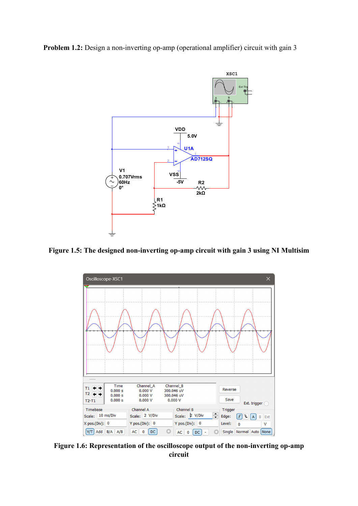

Experiment controls
All controls update the analytical model instantly.
Virtual oscilloscope
Gain
Output RMS
Output peak
● Input ● Output
Time window: 100 ms. Output uses ideal gain with symmetric hard clipping at the selected supply rails.
Feedback circuit
Ideal closed-loop gain: Aᵥ = 1 + R₂/R₁. R₁ connects the inverting input to ground; R₂ provides negative feedback from the output.
Original laboratory evidence
Multisim Lab 2, Problem 1.2, page 3, Figures 1.5–1.6. The original AD712SQ circuit uses 1 kΩ and 2 kΩ resistors, ±5 V supplies and a 0.707 Vrms, 60 Hz source. The oscilloscope shows in-phase amplification. The original figure is a Multisim simulation, not a physical measurement.

Biomedical relevance: non-inverting amplifiers are building blocks for signal conditioning. This educational model is not a patient-connected device or a validated medical circuit.
Model limitations
The browser model omits AD712SQ-specific output swing, bandwidth, slew rate, input offset, noise, loading and common-mode restrictions. Its rail clipping is an idealized approximation, not a SPICE model. The displayed RMS is computed analytically over a full cycle by numerical integration.